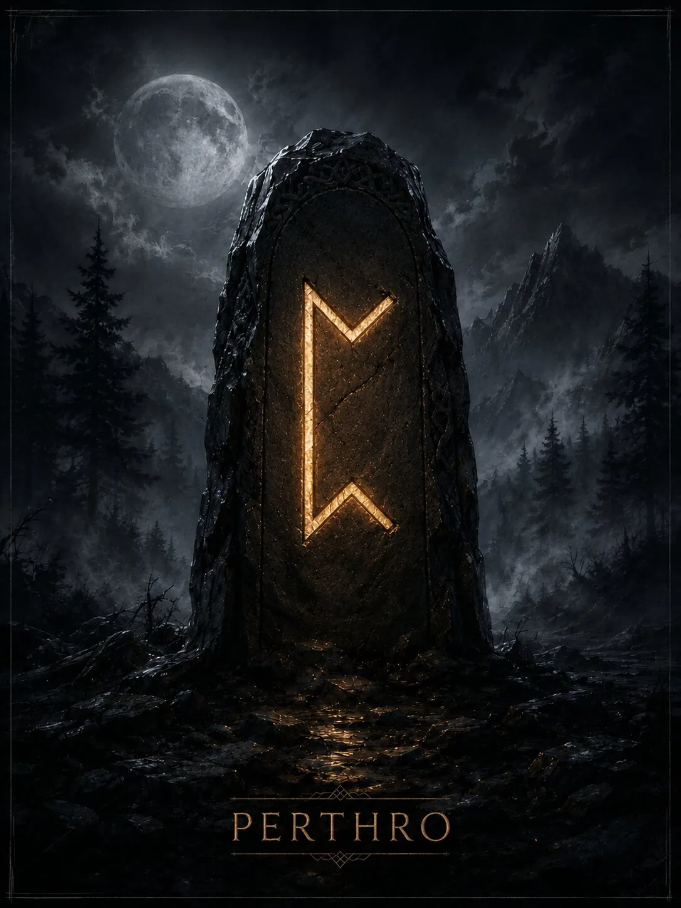

Руна неизвестного фактора, жребия и скрытого механизма ситуации. Её ключевая тема — не обязательно «судьба», а то, что пока не раскрыто или зависит от вероятности.
Краткая суть
Руна неизвестного фактора, жребия и скрытого механизма ситуации. Её ключевая тема — не обязательно «судьба», а то, что пока не раскрыто или зависит от вероятности.
Историческая традиция
Perthro — одна из наиболее спорных рун Старшего Футарка. Точное значение реконструированного имени неизвестно; популярные толкования через чашу для жребия, игру или «чрево» являются гипотезами. Поэтому современную мантическую тему тайны и случая следует отделять от исторического факта.
- Ключевые значения: тайна, жребий, случай, скрытое, вероятность, раскрытие, неизвестность, выбор
Современная мантика
Мантические значения относятся к современной рунической практике.
- Положительное проявление: Неожиданное раскрытие, удачный случай, получение скрытой информации, благоприятный поворот вероятностей.
- Негативное проявление: Непредсказуемость, игра вслепую, скрытая деталь, риск зависимости от случая или азартного решения.
- Совет: Признай, чего ты не знаешь; не строй точный прогноз там, где слишком много скрытых переменных.
- Предупреждение: Не всякая неизвестность является мистической тайной — иногда просто недостаточно данных.
- Итог ситуации: Неожиданный поворот, вскрытие секрета или результат, который нельзя было полностью контролировать.
Психологическое состояние
Пребывание в неопределённости и необходимость терпеть отсутствие полного контроля.
Духовное значение
Развитие способности отличать интуицию от фантазии и принимать ограниченность собственного знания.
Прямое и перевёрнутое положение
Мантическая трактовка и работа с перевёрнутыми положениями относятся к современной рунической практике. Для Старшего Футарка не сохранилось древнего руководства, которое задавало бы такой способ гадания как единственно правильный. Перевёрнутая Perthro в современных системах — неприятное раскрытие, проигрыш вероятности, секрет, который работает против человека, или ошибочная ставка на случай.
Отличия трактовок разных школ
Историческая семантика Perthro не установлена. Поэтому любые уверенные заявления «в древности руна означала судьбу/чрево/чашу» следует маркировать как гипотезу или современную школу.
Итог
Руна неизвестного фактора, жребия и скрытого механизма ситуации. Её ключевая тема — не обязательно «судьба», а то, что пока не раскрыто или зависит от вероятности.
Финансы
переменный результат, риск, бонус, случайная возможность; требует осторожности с азартом.
Работа
скрытая информация, закрытый конкурс, неожиданное решение руководства, исследовательская задача.
Отношения
тайна, скрытые чувства, неизвестный фактор, неожиданное знакомство или раскрытие секрета.
Семья и быт
обнаружение старой информации, неожиданный поворот семейного вопроса, неизвестная деталь.
Руна как характеристика человека
Загадочный, осторожный человек, не раскрывающий всех карт; иногда любитель риска.
- Мысли: что-то скрывает, проверяет варианты или ждёт случайного поворота.
- Чувства: неясные, противоречивые или сознательно скрываемые.
- Действия: может поступить неожиданно, раскрыть секрет или рискнуть.
Современное магическое значение
Это современная эзотерическая практика, а не исторически подтверждённая традиция.
- Современная магическая трактовка: поиск скрытого, работа с вероятностями и тайной, усиление интуитивного исследования.
- Задачи: диагностика, раскрытие неизвестного, поиск информации, работа с шансом.
- Усиливает: неопределённость, чувствительность к скрытым факторам.
- Ослабляет: избыточную предсказуемость и жёстко заданный сценарий.
- Риск: подменить анализ азартом или принять случайное совпадение за подтверждение гипотезы.
Руна в формулах и ставах
Perthro часто используется как символ скрытого механизма: Perthro+Kenaz — раскрытие; Perthro+Ansuz — получение скрытой информации; Perthro+Jera — результат, проявляющийся со временем.
Эзотерическая трактовка
В современной эзотерической трактовке
В диагностике Perthro может указывать на скрытый фактор и поэтому современные практики иногда трактуют её как «нечто сделано тайно».
Возможное бытовое объяснение
Альтернативное объяснение
Бытовая альтернатива: неполная информация, неизвестный участник, случайность, закрытые договорённости, ошибочная гипотеза. Руна не подтверждает магическое происхождение скрытого фактора.
Характерные сочетания
- Perthro + Kenaz: секрет раскрывается.
- Perthro + Laguz: сильная интуитивная неопределённость.
- Perthro + Fehu: неожиданный финансовый шанс или риск.
Руна в формулах и ставах
Perthro часто используется как символ скрытого механизма: Perthro+Kenaz — раскрытие; Perthro+Ansuz — получение скрытой информации; Perthro+Jera — результат, проявляющийся со временем.
Мантические, магические и диагностические значения относятся к современной рунической практике. Историческая часть опирается на рунические поэмы и эпиграфику. Материалы носят справочный и развлекательный характер.